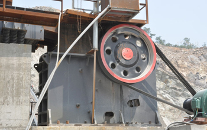

The latest domestic machinery industry data show that domestic high-end crusher machine only to crush more than 30% of enterprises of all equipment, while the traditional backward crushing equipment accounted for more than 60%.
For all the broken equipment, users are most concerned about whether the material is suitable for crushing, crushing loss of productivity whether it can meet the requirements of the crusher machine production hardware. The most essential needs of these requirements and improve the overall performance of the crusher, truly meet customer needs.
Improve the overall performance of the crusher machine, the need to design ideas into the site users, users really need to see what is what type of equipment. Production from the user's site to identify potential needs of users, constantly updated technology, and to play to their use of performance. Currently crusher machine on the global market operations coarse crusher is mainly oriented to the jaw crusher, cone Sec equipment in recent years appears broken, impact crusher based. Jaw crusher earliest development, mainly in a few decades, companies have been on the jaw crusher upgrade and replacement, process and technology has been very mature, but only with respect to the development of several years of Sec equipment is also required undergo more tests.
Improve the wear resistance of the parts can reduce wear of parts, to extend the life of the machine. Feeding mode change material can also improve the overall performance of the crusher machine. Through continuous research experiments, developed a center feed ring along the whole waterfall drop feed and feed two feeding centers, greatly improving the overall performance of the crusher machine. Crusher machine users really do have to comply with the principles of practical devices, providing maximum convenience for the user to get the best benefit is our ultimate pursuit.
These crusher machine devices are able to meet the processing of solid waste crushing capacity required to meet the broken product particle size and shape requirements; easy to install, able to adapt to the needs of different working environments; can efficiently recover useful materials in the solid waste; crusher feed adaptability, and will not produce over crushed phenomenon; low power consumption, can achieve efficient separation. Our company is a professional manufacturers of crusher machines, able to provide advanced equipment for crushing various solid waste processing, while developing efficient crushing process. Welcome to visit to buy.
Live chat with our professional customer service! Get the quotation list.
Chat Now